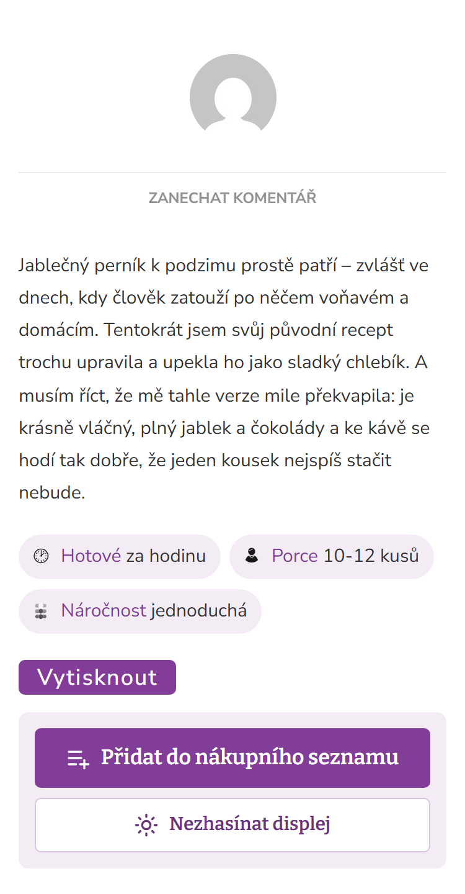
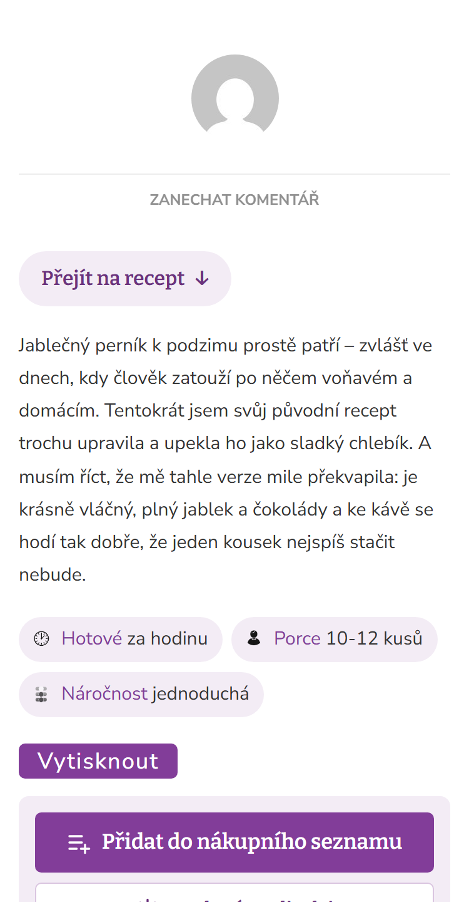
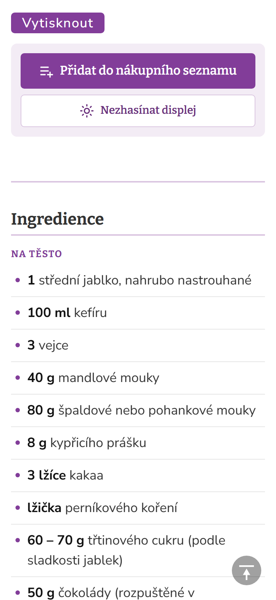
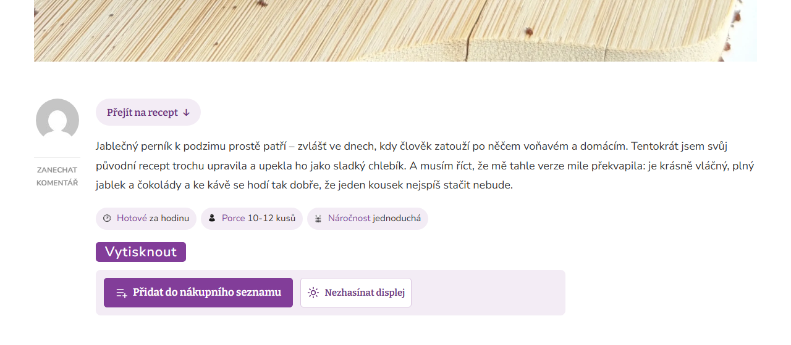
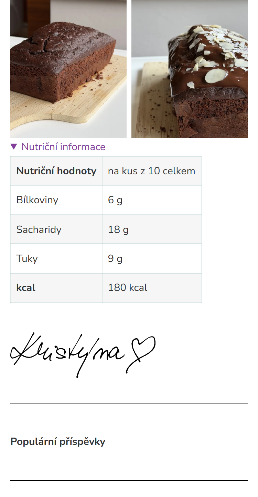
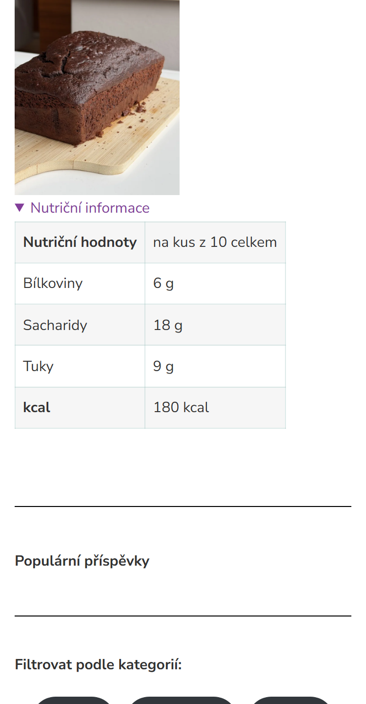
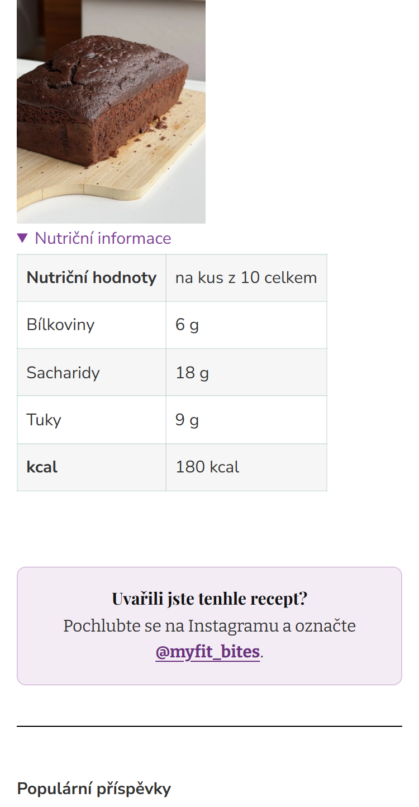
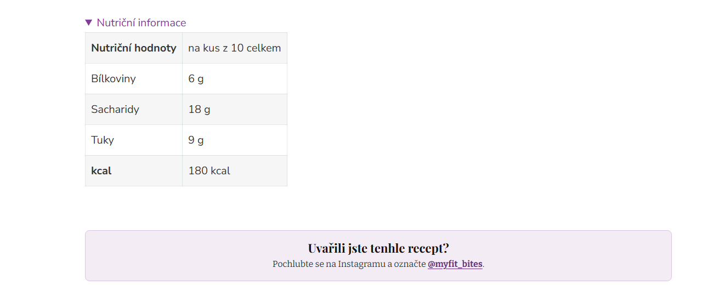

Úvod a konec receptu
Návrh podle pinchofyum.com: v úvodu odkaz „Přejít na recept“, na konci místo podpisu krátká výzva k Instagramu. Zatím je to jen v testovací kopii webu, na živém webu se nic nezměnilo.
1. Úvod: „Přejít na recept“
Na začátku každého receptu je odkaz, který jedním klepnutím sjede rovnou k tlačítku Vytisknout, nákupnímu seznamu a ingrediencím. Pinch of Yum ho má jako první věc v článku. Nejvíc pomůže u receptů s delším úvodem.




2. Konec: místo podpisu výzva k Instagramu
Podpis se srdíčkem schovám, jak píšeš. Na jeho místo navrhuji box „Uvařili jste tenhle recept? Pochlubte se na Instagramu a označte @myfit_bites.“ Takhle končí recepty i na Pinch of Yum a čtenáři tak mají důvod sdílet fotky a označit tě.




Co zůstává stejné
- Do tisku ani do PDF se odkaz ani box nedostanou.
- Samotné recepty neupravuji. Všechno dělá plugin a každou z těch dvou věcí jde vypnout jedním zaškrtnutím.
- Platí to pro všechny recepty najednou, včetně nových.